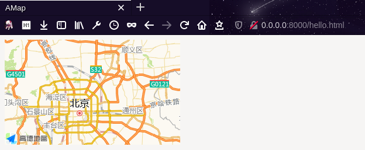

高德地图API简单使用
写在前面
API 版本：2.0
参考：高德开放平台
准备页面
新建AMap.html文件，添加以下内容
- 如果是移动端开发，请在 head 标签内添加 viewport meta 标签，以达到最佳的绘制性能；
<meta name="viewport" content="initial-scale=1.0, user-scalable=no">- 添加 div 标签作为地图容器，同时为该 div 指定 id 属性；
<div id="container"></div>- 通过 css 为地图容器指定高度、宽度；
#container {width:300px; height: 180px; }- 引入地图 JSAPI 脚本，更多 JSAPI 加载方式。
<script type="text/javascript" src="https://webapi.amap.com/maps?v=2.0&key=你申请的key值"></script>- 在完成如上准备工作之后便可以开始进行开发了。
实际运行
有两种方式运行此项目
- 在当前目录下执行
python3 -m http.server 8000访问：localhost:8000/AMap.html即可
- 直接使用浏览器打开相应文件，直接通过文件形式访问可能会出现其他问题。
完整文件
需要将your_key替换为你自己的 key：
<!DOCTYPE html>
<html lang="en">
<head>
<meta charset="UTF-8" />
<meta http-equiv="X-UA-Compatible" content="IE=edge" />
<meta name="viewport" content="width=device-width, initial-scale=1.0" />
<title>AMap</title>
<style>
#container {
width: 300px;
height: 180px;
}
</style>
</head>
<body>
<div id="container"></div>
</body>
<script src="https://webapi.amap.com/loader.js"></script>
<script type="text/javascript">
AMapLoader.load({
key: "your_key", // 申请好的Web端开发者Key，首次调用 load 时必填
version: "2.0", // 指定要加载的 JSAPI 的版本，缺省时默认为 1.4.15
plugins: [], // 需要使用的的插件列表，如比例尺'AMap.Scale'等
})
.then((AMap) => {
var map = new AMap.Map("container");
})
.catch((e) => {
console.error(e); // 加载错误提示
});
</script>
</html>效果：

简单拓展
初始
var map = new AMap.Map("container", {
zoom: 11, // 缩放级别
center: [116, 39], // 中心点坐标
viewMode: "3D", // 使用3D视图
});图层
官方提供图层：
- 标准
- 卫星
- 路网
- 路况
- 建筑
- …
默认只显示标准底图，可以使用map.add方法添加图层。
var map = new AMap.Map("container", {
zoom: 11, // 缩放级别
center: [116, 39] // 中心点坐标
});
// 实时路况图层
var traffic = new AMap.TileLayer.Traffic({
zIndex: 10
});
map.add(traffic)初始化时添加图层：
var map = new AMap.Map("container", {
zoom: 11, // 缩放级别
center: [116, 39], // 中心点坐标
layers: [
new AMap.TileLayer.Satellite(),
new AMap.TileLayer.RoadNet()
]
});点标记
默认样式Marker
var marker = new AMap.Marker({
position: [116, 39]
})
// 添加点标记
map.add(marker)
// 移除点标记
map.remove(marker)矢量图形标记
var lineArr = [
[110, 30],
[111, 29],
[112, 28]
]
var polyline = new AMap.Polyline({
path: lineArr,
strokeColor: "#ff0000",
strokeWeight: 5,
strokeStyle: "solid"
});
map.add(polyline)事件与信息窗口
Map、点标记、矢量图形的实例均支持事件，鼠标或触摸操作。
var infoWindow = new AMap.InfoWindow({
content:'hello',
offset: new AMap.Pixel(16, -45)
});
var onMarkerClick = function(e){
infoWindow.open(map, e.target.getPosition());
}
var marker = new AMap.Marker({
position: [116, 39]
})
map.add(marker)
marker.on('click', onMarkerClick); // 绑定click事件
comment:
- Valine
- LiveRe
- ChangYan